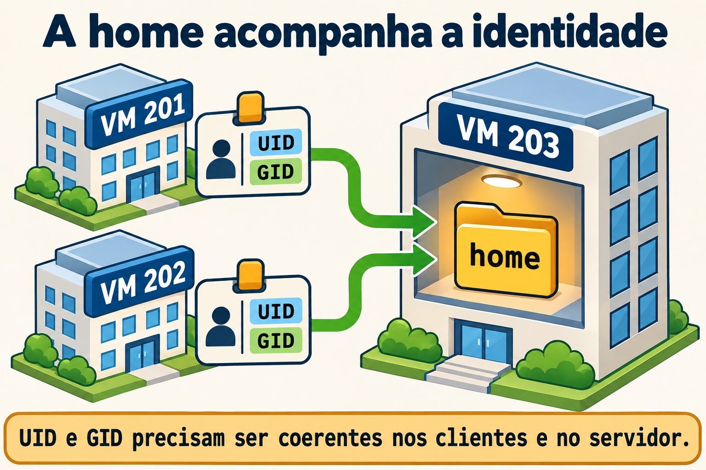

Aula 13.3 · autofs
No Windows Server, você conhece caminhos de rede usados quando um usuário abre uma pasta. No Linux, autofs pode encaixar a exportação quando alguém acessa um caminho e liberá-la depois de ficar sem uso. Você vai separar mapa mestre, mapa indireto e identidade numérica antes de montar homes sob demanda.
Núcleo desta aula: o mapa descreve o destino; o acesso dispara a montagem; a identidade do usuário ainda precisa corresponder aos dados no servidor. O resto é aprofundamento.
| Ficha | |
|---|---|
| Módulo | M13 · Armazenamento em rede, aula 3 de 3 |
| Quando | Semana 19 |
| Ao final | Você configura um mapa indireto, diagnostica o acesso sob demanda e monta uma home NFS nas duas famílias |
| Pré-requisitos | 13.1 e 13.2; VM 203 exportando; clientes sem a montagem fstab do exercício anterior; IP_SRV registrado |
| Tempo | Cerca de 90 minutos, mais a sessão do desafio |
| Snapshots | m13a3-inicio e m13a3-fim nas VMs 201, 202 e 203 |
1 · Aquecimento
Responda sem consultar. O gabarito está no fim.
- Qual diferença existe entre caminho remoto e ponto de montagem local?
- Por que um diretório atual pode impedir desmontagem?
- Um mesmo nome de usuário em duas máquinas comprova que os UIDs são iguais?
2 · Por que importa
Uma frota tem dezenas de diretórios remotos, mas cada máquina usa poucos por vez. Montar tudo no boot aumenta dependências desnecessárias. Autofs permite adiar a montagem até o caminho ser realmente usado.
Isso não elimina a dependência do servidor quando alguém precisa dos dados. Você precisa saber se a falha vem do mapa, do caminho NFS, da rede ou da identidade que tenta acessar a home.
3 · Modelo mental
O mapa mestre indica qual balcão atende aquela ala do prédio. O mapa indireto relaciona cada chave com uma biblioteca remota. Tocar a porta da chave faz autofs construir a ponte; enquanto alguém a usa, ela não deve ser retirada.
mapa mestre -> ponto base -> mapa indireto -> chave -> destino NFS
acesso -> montagem
Ponte Windows
| Referência do Windows | Neste lab Linux |
|---|---|
| Caminho remoto usado quando necessário | Acesso a uma chave autofs |
| Mapeamento da pasta de usuário | Home registrada apontando para a árvore autofs |
| Identidade central coerente | UID e GID coerentes neste lab local |
| Conexão de rede ainda necessária | NFS precisa responder quando o caminho é usado |
4 · O essencial
Mapa mestre e indireto
Uma entrada mestre aponta o diretório base e o arquivo de mapa. No mapa indireto, a chave é um componente abaixo dessa base. Neste lab, /mnt/m13-auto/share usa a chave share sob /mnt/m13-auto.

Inatividade não é um cronômetro de expulsão
O timeout permite tentar expirar uma montagem sem uso. Um arquivo aberto ou uma shell dentro dela pode mantê-la ocupada. O instante da expiração também depende da verificação do daemon; não prometa que ela ocorrerá exatamente no segundo configurado.
Listar o conteúdo do próprio caminho dispara acesso. Para observar sem provocá-lo, liste os sistemas NFS montados com findmnt -rn -t nfs,nfs4 -o TARGET,SOURCE.
Home remota e identidade
O cadastro do usuário aponta a home; autofs fornece a árvore quando acessada. O servidor continua verificando os números e as permissões. Nome igual com UID diferente não é uma identidade coerente.


Rocky × Debian
| Item | Rocky 9 | Debian 13 |
|---|---|---|
| Pacotes | autofs, nfs-utils | autofs, nfs-common |
| Unidade | autofs.service | autofs.service |
| Mapas próprios | /etc/auto.master.d/m13.autofs, /etc/auto.m13 | Os mesmos caminhos, após conferir o include mestre |
| Homes NFS | Conferir use_nfs_home_dirs no desafio | Observar política AppArmor real, sem usar comandos SELinux |
5 · Lab guiado
Passo 1 · Proteger e conferir a base
Palpite: autofs consegue corrigir sozinho uma exportação NFS que já está inacessível?
No host Proxmox:
qm snapshot 201 m13a3-inicio
qm snapshot 202 m13a3-inicio
qm snapshot 203 m13a3-inicioNos clientes, confirme o preparo deixado na 13.2. Se autofs já estiver ativo ou habilitado com mapas alheios, não o reinicie para esta aula; prepare uma base de lab sem esses consumidores.
IP_SRV=$(cat "$HOME/m13/ip-servidor")
systemctl is-active autofs.service
systemctl is-enabled autofs.service
sudo test ! -e /etc/auto.master.d/m13.autofs
sudo test ! -e /etc/auto.m13
sudo test ! -e /mnt/m13-auto
findmnt -rn -t nfs,nfs4 -o TARGET,SOURCE
timeout 2 bash -c "</dev/tcp/$IP_SRV/2049" && echo "TCP 2049 ok"Saída esperada: servidor alcançável, nomes de exercício livres e nenhuma montagem fstab da 13.2. Autofs está ausente ou inativo e desabilitado.
Verifique: na 203, confirme o arquivo leia.txt e a exportação ativa. Não use autofs para esconder uma falha da base NFS.
Passo 2 · Instalar e inspecionar o mapa mestre
Palpite: criar um arquivo de mapa em qualquer diretório faz o daemon usá-lo automaticamente?
Na Rocky cliente 201:
sudo dnf install -y autofs nfs-utilsNa Debian cliente 202:
sudo apt update
sudo apt install -y autofs nfs-commonNos dois clientes:
sudo systemctl stop autofs.service
grep -n 'auto.master.d' /etc/auto.master
sudo automount -mSaída esperada: o mapa mestre inclui /etc/auto.master.d pelo mecanismo +dir: da base do curso. O arquivo terminado em .autofs será lido nesse diretório.
Verifique: se o include estiver ausente, pare e investigue o mapa mestre realmente configurado antes de prosseguir. Não acrescente mapas que ninguém está carregando.
Passo 3 · Criar a chave de leitura
Palpite: a chave share precisa ser o nome do diretório remoto?
Nos dois clientes, configure somente os arquivos próprios.
sudo install -d -m 0755 /etc/auto.master.d
printf '/mnt/m13-auto /etc/auto.m13 --timeout=30\n' | sudo tee /etc/auto.master.d/m13.autofs > /dev/null
printf 'share -fstype=nfs,vers=4.2,ro,hard,nosuid,nodev %s:/srv/m13-share\n' "$IP_SRV" | sudo tee /etc/auto.m13 > /dev/null
sudo chmod 0644 /etc/auto.master.d/m13.autofs /etc/auto.m13
sudo automount -m
sudo systemctl enable --now autofs.service
findmnt -rn -t nfs,nfs4 -o TARGET,SOURCE
cat /mnt/m13-auto/share/leia.txt
findmnt -rn -t nfs,nfs4 -o TARGET,SOURCESaída esperada: o mapa lista a chave e o destino esperado. O primeiro acesso entrega NFS COURSE ok e cria a montagem NFS correspondente.
Verifique: observe a origem no findmnt, não apenas a existência do diretório base autofs. Um ponto autofs não é ainda a montagem NFS de uma chave.
Decida 1
A base existe, mas a chave não entrega conteúdo. Qual é a próxima conferência?
| Opção | Ação |
|---|---|
| A | Tornar toda a árvore gravável por todos |
| B | Apagar a exportação no servidor |
| C | Conferir mapa carregado, chave e destino |
Escolha C. A chave faz a ligação entre o caminho usado e o destino remoto.
Passo 4 · Observar a expiração sem tocar na chave
Palpite: listar repetidamente a pasta é uma observação sem efeito sobre sua inatividade?
Nos dois clientes, saia da árvore e feche processos que a usam. Espere pelo menos um ciclo de inatividade e inspeção; não consulte o conteúdo durante a espera.
cd "$HOME"
findmnt -rn -t nfs,nfs4 -o TARGET,SOURCESaída esperada: depois de ficar realmente sem uso e ser processada pelo daemon, a montagem NFS da chave desaparece; o ponto base autofs continua.
Verifique: repita a listagem de sistemas montados. Depois acesse novamente o arquivo e observe a reconstrução da montagem.
Passo 5 · Diagnosticar os registros certos
Palpite: uma negativa de leitura necessariamente exige mudar o mapa mestre?
Nos dois clientes:
sudo automount -m
sudo journalctl -u autofs.service -n 20 --no-pager
findmnt -rn -t nfs,nfs4 -o TARGET,SOURCE
stat -c '%u:%g %a %n' /mnt/m13-auto/share/leia.txtSaída esperada: chave carregada, destino correto e identidade numérica do arquivo. O comando de stat é um acesso e pode montar a chave novamente.
Verifique: compare erro de mapa, falha de montagem e negativa de acesso a um arquivo já montado. Cada fase tem evidências diferentes.
Decida 2
O nome de usuário coincide, mas ele vê um dono diferente ao acessar uma home. O que conferir?
| Opção | Ação |
|---|---|
| A | UID, GID e modos no cliente e no servidor |
| B | Excluir o usuário da outra máquina |
| C | Retirar root_squash de todas as exportações |
Escolha A. O nome legível não substitui a identidade numérica usada neste NFS.
Passo 6 · Conferir a primeira utilização após boot
Palpite: autofs ativo no boot significa que todas as suas chaves já estão montadas?
Reinicie os clientes um por vez. A 203 permanece ligada.
sudo systemctl rebootDepois de voltar:
systemctl is-active autofs.service
findmnt -rn -t nfs,nfs4 -o TARGET,SOURCE
cat /mnt/m13-auto/share/leia.txt
findmnt -rn -t nfs,nfs4 -o TARGET,SOURCESaída esperada: daemon ativo e montagem criada no primeiro acesso, entregando o conteúdo esperado.
Verifique: diferencie a volta do serviço, a carga do mapa e a criação da montagem. Não use somente systemctl is-active como verificação dos dados.
6 · Quebre e conserte
Quebra 1 · Chave diferente do caminho usado
Nos clientes, saia da árvore, pare apenas o autofs de exercício e mude a chave própria.
cd "$HOME"
sudo systemctl stop autofs.service
sudo cp -a /etc/auto.m13 "$HOME/m13/auto.m13.valido"
sudo sed -i 's/^share /share-errado /' /etc/auto.m13
sudo systemctl start autofs.service
cat /mnt/m13-auto/share/leia.txtSintoma: o caminho antigo deixa de entregar o arquivo.
Investigação: compare a chave usada com sudo automount -m e o arquivo do mapa.
Causa: a chave passou a ter outro nome; o caminho antigo não corresponde a uma entrada.
Conserto: pare o serviço, restaure o mapa próprio e inicie novamente.
sudo systemctl stop autofs.service
sudo cp -a "$HOME/m13/auto.m13.valido" /etc/auto.m13
sudo systemctl start autofs.serviceVerifique: o acesso à chave original volta a entregar NFS COURSE ok.
Prevenção: registre ponto base, chave e caminho remoto separadamente.
Quebra 2 · Destino remoto incorreto
Nos clientes, mantenha a chave, mas altere o destino no mapa próprio.
cd "$HOME"
sudo systemctl stop autofs.service
sudo sed -i 's|:/srv/m13-share|:/srv/m13-inexistente|' /etc/auto.m13
sudo systemctl start autofs.service
cat /mnt/m13-auto/share/leia.txtSintoma: a chave existe no mapa, mas a montagem não atende o caminho solicitado.
Investigação: leia o mapa, o journal do autofs e a exportação ativa na 203.
Causa: o destino não corresponde à exportação publicada. O mapa mestre continua correto.
Conserto: restaure o mapa válido, sem alterar a lista de clientes no servidor.
sudo systemctl stop autofs.service
sudo cp -a "$HOME/m13/auto.m13.valido" /etc/auto.m13
sudo systemctl start autofs.serviceVerifique: a origem correta reaparece no primeiro acesso.
Prevenção: confirme servidor e caminho antes de ampliar qualquer permissão.
Quebra 3 · Uso mantém a montagem ocupada
Em um terminal A, mantenha a shell dentro da chave; no B, observe os sistemas montados depois do período de inatividade.
cd /mnt/m13-auto/share
pwdSintoma: a montagem continua presente, mesmo depois do timeout configurado.
Investigação: identifique o diretório atual da shell no A. Evite novos acessos à chave pelo B durante a observação.
Causa: a montagem não está sem uso. O timeout não autoriza expulsar um consumidor ativo.
Conserto: no A, volte a cd "$HOME" e deixe a árvore realmente sem uso.
Verifique: após o daemon processar a expiração, a montagem NFS desaparece e a base autofs permanece.
Prevenção: diferencie ausência de requisições novas de ausência de referências abertas.
Limpeza e preparação do desafio
Antes do desafio, saia da árvore nos clientes e remova a chave de leitura de exercício. O servidor e a exportação da 13.1 continuam disponíveis.
cd "$HOME"
sudo systemctl disable --now autofs.service
sudo rm -f /etc/auto.master.d/m13.autofs /etc/auto.m13
findmnt -rn -t nfs,nfs4 -o TARGET,SOURCESe uma montagem continuar ocupada, identifique o consumidor e encerre seu uso antes de seguir. Não force a remoção da árvore.
7 · Armadilhas
| Erro comum | O que fazer | Por quê |
|---|---|---|
| Mudar o mapa sem saber quem o carrega | Inspecionar mestre e automount -m | Arquivo solto pode não participar |
| Esperar expiração enquanto usa a pasta | Sair da árvore e observar sem tocar | O uso mantém a referência |
Mapear sobre /home existente | Usar uma subárvore nova e vazia | Não encobre homes já existentes |
| Confiar só no nome do usuário | Conferir UID e GID | Identidade numérica determina o acesso neste lab |
8 · Quiz
- Qual é a função do mapa mestre?
- O que a chave de um mapa indireto representa no caminho?
- Por que
lsna chave pode mudar o resultado da observação? - Timeout obriga a desmontar uma árvore em uso?
- Por que usar uma subárvore nova para homes do exercício?
- Autofs substitui coerência de UID e GID?
9 · Cola
| Tarefa | Comando |
|---|---|
| Mapas interpretados | sudo automount -m |
| Registro do daemon | sudo journalctl -u autofs.service -n 20 --no-pager |
| Montagens NFS sem ler conteúdo | findmnt -rn -t nfs,nfs4 -o TARGET,SOURCE |
| Identidade do usuário de exercício | id m13ana |
| Cadastro da home | getent passwd m13ana |
Flashcards: crie cartões para mapa mestre, chave, acesso, expiração, UID e home. Revise em D+1, D+3, D+7 e D+21.
10 · Checklist e fechamento
- [ ] Usei somente mapas próprios e pontos locais novos.
- [ ] Observei criação e expiração sem confundir base autofs e montagem NFS.
- [ ] Concluí o desafio nas VMs 201 e 202 com dados na 203.
- [ ] Limpei contas, mapas e propriedades de exercício conforme o roteiro final.
Último exercício: descreva o caminho completo entre o cadastro de m13ana, a chave do mapa e o arquivo na 203. Cite onde UID e GID entram nessa decisão.
Reboot de conferência: no desafio, comprove o primeiro acesso à home depois do reboot dos clientes. Depois da limpeza, confira que os mapas e contas próprios não voltam.
Somente após terminar o desafio e sua limpeza, no host Proxmox:
qm snapshot 201 m13a3-fim
qm snapshot 202 m13a3-fim
qm snapshot 203 m13a3-fim11 · Na vida real
Em um host que você administre ou tenha autorização para inspecionar, leia os mapas e o estado do serviço. Evite acessar uma chave apenas para observá-la, pois isso pode disparar uma montagem. Não reinicie o daemon nem altere mapas nesta missão.
Quem mantém as identidades? Onde fica a origem dos dados? Qual processo depende de uma montagem que talvez não expire enquanto estiver em uso?
12 · Aprofundar quando quiser
- auto.master(5) e autofs(5): mapas e chaves.
- autofs(8): serviço e comportamento.
- exports(5) e nfs(5): identidade e acesso NFS.
- No Rocky, consulte
man nfsd_selinuxeman useraddantes do desafio.
DeepTutor (http://10.1.0.149:3782, KB "Curso Linux Sysadmin"):
!explica Separe mapa mestre, chave indireta e destino NFS com uma analogia de portaria.!feynman Vou explicar por que autofs não resolve um UID diferente no servidor. Critique minha explicação.!quiz Crie seis casos de acesso sob demanda, expiração e home NFS.
Desafio do M13 · Uma home, dois clientes
Crie a conta fictícia m13ana com UID e GID 2301 nas três VMs. O número só pode ser usado se estiver livre em todas elas. Os clientes apontam a home para /home/m13-net/m13ana, uma subárvore nova; não monte sobre /home existente.
Preparar identidade e conteúdo
Nas três VMs, confira nome, UID e GID antes de criar. A ausência de resultados é o pré-requisito.
getent passwd m13ana
getent passwd 2301
getent group m13ana
getent group 2301
sudo groupadd -g 2301 m13anaNa 203, crie uma conta sem login interativo e a árvore remota própria.
sudo useradd -M -u 2301 -g 2301 -s /sbin/nologin m13ana
sudo test ! -e /srv/m13-homes
sudo test ! -e /etc/exports.d/m13-homes.exports
sudo install -d -m 0755 /srv/m13-homes
sudo install -d -o 2301 -g 2301 -m 0700 /srv/m13-homes/m13ana
printf 'HOME NFS ok\n' | sudo tee /srv/m13-homes/m13ana/home.txt > /dev/null
sudo chown 2301:2301 /srv/m13-homes/m13ana/home.txt
sudo chmod 0600 /srv/m13-homes/m13ana/home.txt
sudo semanage fcontext -a -t public_content_rw_t '/srv/m13-homes(/.*)?'
sudo restorecon -Rv /srv/m13-homes
getsebool nfsd_anon_write | awk '{print $3}' > "$HOME/m13/nfsd_anon_write.inicio"
sudo setsebool -P nfsd_anon_write on
sudo tee /etc/exports.d/m13-homes.exports > /dev/null <<'EOF'
/srv/m13-homes 10.1.0.51(rw,sync,root_squash,no_subtree_check) 10.1.0.52(rw,sync,root_squash,no_subtree_check)
EOF
sudo exportfs -ra
sudo exportfs -vO booleano acima permite a escrita NFS em conteúdo rotulado para compartilhamento público gravável; isso não muda os modos 0700 e 0600, que protegem a home. O servidor é a VM nova e dedicada do curso; restaure o valor registrado na limpeza.
Conectar as homes sob demanda
Nas VMs 201 e 202, confirme que /home/m13-net, o mapa e o arquivo mestre próprios ainda não existem. Crie a conta sem criar uma home local.
sudo test ! -e /home/m13-net
sudo test ! -e /etc/auto.m13homes
sudo test ! -e /etc/auto.master.d/m13homes.autofs
sudo useradd -M -u 2301 -g 2301 -d /home/m13-net/m13ana -s /bin/bash m13ana
IP_SRV=$(cat "$HOME/m13/ip-servidor")
printf '/home/m13-net /etc/auto.m13homes --timeout=30\n' | sudo tee /etc/auto.master.d/m13homes.autofs > /dev/null
printf 'm13ana -fstype=nfs,vers=4.2,rw,hard,nosuid,nodev %s:/srv/m13-homes/m13ana\n' "$IP_SRV" | sudo tee /etc/auto.m13homes > /dev/nullSomente na Rocky cliente 201, registre o estado do booleano de homes antes de autorizar esse uso.
getsebool use_nfs_home_dirs | awk '{print $3}' > "$HOME/m13/use_nfs_home_dirs.inicio"
sudo setsebool -P use_nfs_home_dirs onNos dois clientes:
sudo automount -m
sudo systemctl enable --now autofs.service
id m13ana
getent passwd m13ana
sudo -iu m13ana sh -c 'pwd; id; cat home.txt; printf "CLIENT wrote\n" >> registro.txt'
findmnt -rn -t nfs,nfs4 -o TARGET,SOURCENão defina senha nem habilite login SSH para a conta de exercício. O teste com sudo -iu usa a identidade local já conferida e verifica a home, sem acrescentar um serviço de autenticação de rede.
Reinicie um cliente por vez e repita o primeiro acesso como m13ana. O mesmo registro.txt precisa conter as duas escritas, com dono numérico 2301:2301 no servidor. Guarde essa evidência antes de limpar.
Limpeza do desafio
Nos clientes, saia da home e confirme que não existem processos da conta de exercício. Se houver, encerre seu uso antes de continuar. Remova somente mapas e conta criados.
pgrep -u 2301
sudo systemctl disable --now autofs.service
sudo rm -f /etc/auto.master.d/m13homes.autofs /etc/auto.m13homes
sudo userdel m13ana
getent group m13ana >/dev/null && sudo groupdel m13ana
findmnt -rn -t nfs,nfs4 -o TARGET,SOURCENa 201, restaure apenas o booleano registrado. Na 203, retire a exportação própria, restaure seu booleano, remova a regra local e os arquivos conhecidos. Use rmdir para recusar a exclusão de uma árvore que ainda tenha dados inesperados.
sudo setsebool -P use_nfs_home_dirs "$(cat "$HOME/m13/use_nfs_home_dirs.inicio")"sudo rm -f /etc/exports.d/m13-homes.exports
sudo exportfs -ra
sudo setsebool -P nfsd_anon_write "$(cat "$HOME/m13/nfsd_anon_write.inicio")"
sudo semanage fcontext -d '/srv/m13-homes(/.*)?'
sudo restorecon -Rv /srv/m13-homes
sudo rm -f /srv/m13-homes/m13ana/home.txt /srv/m13-homes/m13ana/registro.txt
sudo rmdir /srv/m13-homes/m13ana /srv/m13-homes
sudo userdel m13ana
getent group m13ana >/dev/null && sudo groupdel m13anaA 203 continua como servidor NFS com a exportação de leitura da 13.1, documentada para o curso. Os clientes ficam sem mapas de exercício. Os pacotes permanecem instalados, mas o serviço autofs retorna ao estado inativo e desabilitado registrado no preparo.
Gabarito comentado
Aquecimento
- Um fica no servidor e o outro é a entrada na árvore do cliente.
- Ele mantém uma referência ativa ao sistema montado.
- Não. É preciso conferir os identificadores numéricos.
Quiz
- Relacionar o ponto base ao mapa que fornece suas chaves.
- O componente de caminho abaixo do ponto base.
- Porque o acesso pode montar ou renovar o uso da chave.
- Não. O daemon precisa poder liberar a montagem sem consumidores ativos.
- Para não encobrir homes e dados que já existem.
- Não. Ele monta o destino; a identidade e os modos ainda determinam o acesso.
Dicas do Desafio
Se a conta existe mas a home falha, siga cadastro, mapa, montagem e permissão nessa ordem de investigação. Compare os números nas três VMs e a origem efetiva antes de mudar o servidor. Nunca compense um UID errado retirando root_squash.
← Aula 13.2 · Cliente NFS · Índice de aulas · Plano do curso: M14 em diante →